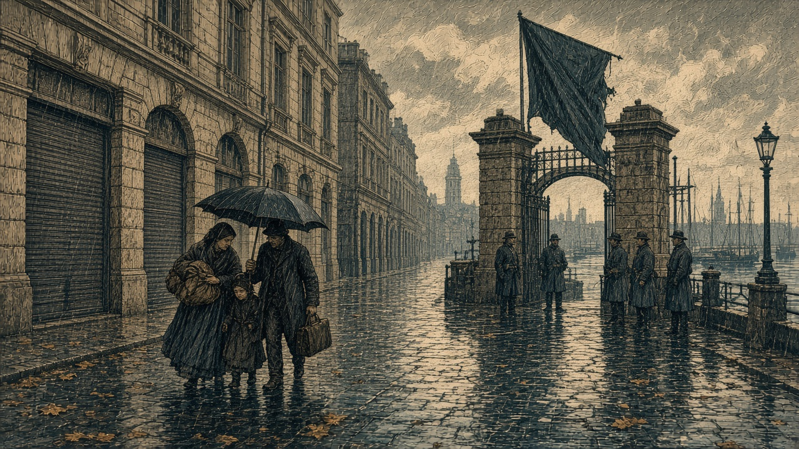

オリョルッルが現代都市を占領
緑丘の首都は残る
雨の（17,48） 港と工場も王国へ アルヴェナは公国のまま

【総合部】オリョルッル王国は第139期、緑丘公国の現代都市（17,48）を占領した。都市は現代都市のまま、雨の中で持ち主が王国に替わった。同じ期、港（14,46）と工場（18,45）も王国領になった。工場からは100億円が奪われた。首都緑丘は雨のまま公国領にあり、現代都市アルヴェナも公国が持っている。
「戸は昨日下ろしたままだ」。荷物を抱えた女は、門の旗を傘の下から見た。「旗の色が替わっている」。前期、王国は軍港と兵站基地を取り、その前の期に現代都市ノルミアを落とした。今期は、もう一つの現代都市が落ちた。
港は港のまま、工場から100億円
港（14,46）は曇りで、港の施設はそのまま王国へ移った。工場（18,45）も曇りで、建物は工場のまま、100億円が王国の側へ渡った。公国の領地は12区画から9区画になった。人口は26,400人、兵力は25,100人。首都緑丘の人口のある町は、まだ公国の旗の下にある。
今期の戦果は王国8,100人、公国1,700人。これまでの戦果は王国49,300人、公国14,100人。公国の第3方面軍の歩兵と第1方面軍の歩兵が、戦闘で消滅した。詳報2面。
同じ週、クジラが王国の都市を踏む
【社会部】オリョルッル王国の都市（10,42）を、第139期、クジラが踏み荒らした。晴れの市街は怪獣の地になり、持ち主はいなくなった。前期に踏まれた別の都市（11,43）の跡は、今は荒地である。詳報4面。
なのですと連邦、緑丘とカペレナが停戦
【国際部】なのです主義人民共和国とシンジケート連邦は、停戦の合意で戦争を終えた。第115期から続いた戦いである。これまでの戦果はなのです114,200人、連邦44,900人。連邦の首都プライムは連邦領のまま残った。
緑丘公国とカペレナ王国も、停戦の合意で戦争を終えた。この戦争は第103期から続いていた。公国とオリョルッル王国の戦いは続いており、王国と黒潮自治国の戦いも続いている。詳報3面。
王国は緑丘の現代都市を取り、港と工場を同じ週に手に入れた。首都緑丘は残っている。アルヴェナも残っている。前線の旗は、雨の門で替わった。
同じ第139期、王国の国内ではクジラが都市1区画を潰した。晴れの石畳は怪獣の地である。攻める側の週が、そのまま守る側の週にもなった。
占領した都市の店は戸を下ろしたまま、荷物を持った家族が門の前にいる。新しい持ち主には、その通りの安全を引き受ける仕事がある。首都が残っていても、落ちた現代都市の住民は、もう公国の役所では手続きを済ませられない。